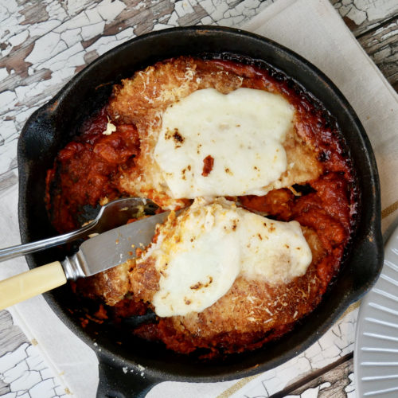

Home Page
Chicken Parmigiana

Description
This classic chicken Parmesan recipe gets the Good Food makeover,
resulting in a hearty yet healthy dish great for sharing with your mates.
Ingredients
- 2 large, skinless chicken breasts, halved through the middle
- 2 eggs, beaten
- 75g breadcrumb
- 75g parmesan, grated
- 1 tbsp olive oil
- 2 garlic cloves, crushed
- Half a 690ml jar passata
- 1 tsp caster sugar
- 1 tsp dried oregano
- Half a 125g ball light mozzarella, torn
Steps
-
Halve 2 large skinless chicken breasts through the middle then place the
4 pieces between cling film sheets and bash out with a rolling pin until
they are the thickness of a £1 coin.
-
Dip in 2 beaten eggs, then 75g breadcrumbs, mixed with half of the 75g
grated parmesan. Set aside on a plate in the fridge while you make the
sauce.
-
Heat 1 tbsp olive oil and cook 2 crushed garlic cloves for 1 min, then
tip in half a 690ml jar passata, 1 tsp caster sugar and 1 tsp dried
oregano. Season and simmer for 5-10 mins.
-
Heat grill to High and cook the chicken for 5 mins each side, then
remove.
-
Pour the tomato sauce into a shallow ovenproof dish and top with the
chicken.
-
Scatter over torn pieces of half a 125g ball light mozzarella, and the
remaining grated parmesan and grill for 3-4 mins until the cheese has
melted and the sauce is bubbling.
-
Serve with vegetables or salad and some pasta or potatoes, if you like.
Home Page